- 第十三届全运会游泳比赛记者采访须知
- 关于全运会媒体班车时刻调整的通知
- 第十三届全国运动会竞赛总日程3.0版
习近平重要讲话引起全运赛场内外强烈反响
-
第十三届全运会在天津闭幕 李克强出席闭幕式
中共中央政治局常委、国务院总理李克强宣布，中华人民共和国第十三届运动会闭幕 [详细]
-
李鸿忠王东峰会见天津全运会运动员教练员代表
15日上午，市委书记李鸿忠，市委副书记、市长王东峰在天津礼堂亲切会见我市在第十三届全运会上取得优异成绩的运动员、教练员和体育系统有关负责同志代表 [详细]
- 天津开启“后全运”时代 全民健身共筑中国梦
- 天津召开十三届全运工作总结会：弘扬全运精神
- 展现精气神增强获得感 天津倾心书写全运会答卷
- 第十三届全运会闭幕 书写迈向体育强国精彩一页
- 李颖川：第十三届全运会圆满成功 竞赛成绩优异
- 曹小红：全运会各项赛事和重要活动进展顺利
- 刘晓农：全运涌现新秀 备战东京奥运形势仍严峻
- 李克敏：竞赛工作有序进行 未收到竞赛方面投诉
- 天津全运成中国体育发展标杆 深刻影响未来走向
- 第十三届全运会：完成历史突破 展现天津力量！
- 图文回放：中华人民共和国第十三届运动会闭幕式
- 全运津彩 各界点赞：全运惠民赛场内外亮点纷呈
- 全运会闭幕式演出群众成主角 全运联欢幸福万家
- 第十三届全运会高清图片回顾 赛场内外无限精彩
- 关于全运会咨询服务热线将于9月15日关闭的通告
- 关于第十三届全运会官方素材下载关闭的通告

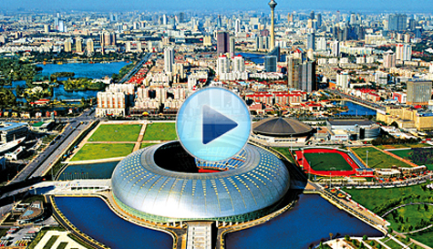
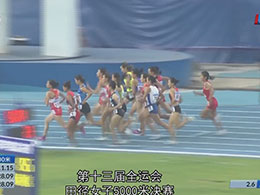
一分钟速看田径女子5000米决赛
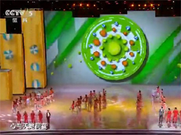
全运闭幕式 运动员代表献唱《健康中国》
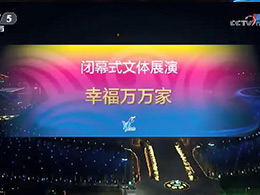
文体展演 幸福万万家
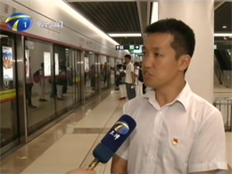
天津：地铁部门疏导客流服务闭幕式
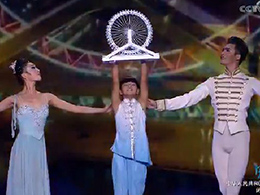
五环点亮弥补遗憾 化为天津之眼永留天津
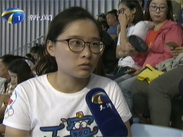
我是东道主：文明观赛 感受城市的温暖
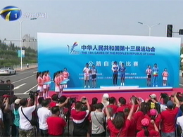
公路自行车女子个人赛辽宁队夺冠
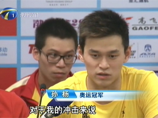
孙杨夺六金 无愧“多金王”
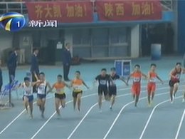
男子4X100米接力 老将张培萌完美谢幕
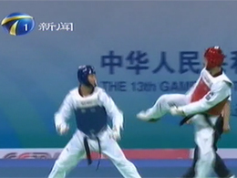
跆拳道决出最后两枚金牌
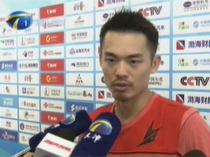
羽毛球比赛精彩收官 林丹全运男单四连冠
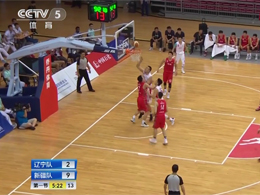
一分钟速看男子篮球决赛
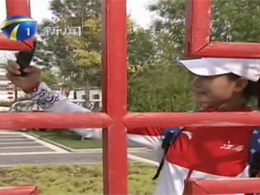
天津绿博园 给江西健儿家的温暖
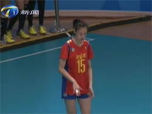
全运赛场：天津青年女排夺冠
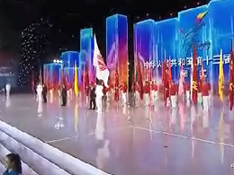
再见天津 陕西再见 数据看全运
全运会会旗交接仪式举行2021年相约陕西
- 傅园慧徐嘉余登台 闭幕式与郭峰共同献唱2017-09-08
- 全运会圣火熄灭 运动激情化为难忘的回忆2017-09-08
- 一分钟速看羽毛球男双决赛 2017-09-08
- 一分钟速看羽毛球男单决赛2017-09-08
- 郭艾伦爆发远投+1对4 辽宁夺冠无悬念2017-09-08
- 辽宁男篮夺本届全运会最后一金 球迷泪奔2017-09-08
- 郭士强：辽宁终于摘下“千年老二”帽子 2017-09-08
- 难说再见 感谢有你 全运圣火今晚将熄灭 2017-09-08
- 姚明蔡振华谈笑风生 新疆队首节领先辽宁 2017-09-08
- 夺金时刻：羽毛球男双王懿律/刘成夺冠2017-09-08
- 夺金时刻：羽毛球女双骆赢/骆羽夺冠 2017-09-08
- 一分钟速看男子足球20岁以下组决赛2017-09-08
- 一分钟速看女子200米单人皮艇决赛2017-09-08
- 一分钟速看男子200米单人皮艇决赛2017-09-08
- 一分钟速看羽毛球女子双打决赛 2017-09-08
- 一分钟速看羽毛球女单决赛 2017-09-08